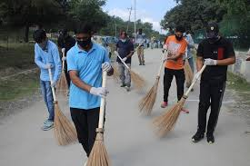
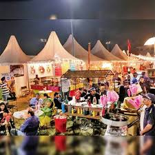
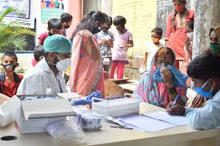
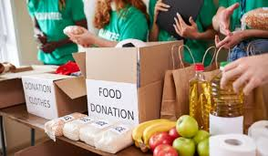
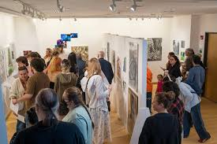
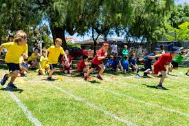

Community Clean-Up Drive
Date: June 10, 2026
Join volunteers in making our neighborhood cleaner and greener. Gloves and cleaning materials will be provided.
Stay connected with your neighborhood and discover exciting community activities happening around you. From cultural festivals and workshops to sports events and charity drives, our portal helps residents stay informed and engaged.
Date: June 10, 2026
Join volunteers in making our neighborhood cleaner and greener. Gloves and cleaning materials will be provided.
Date: June 18, 2026
Enjoy local cuisines, music performances, traditional dances, and fun activities for all age groups.
Date: June 25, 2026
Local doctors and healthcare professionals will provide free basic health screenings and wellness guidance.
|
 Swach BharatThe “Swachh Bharat Community Drive” was successfully conducted in our community with active participation from residents, students, and volunteers. Participants joined hands to clean streets, parks, and public spaces, collect waste, and spread awareness about maintaining cleanliness and proper waste disposal. The event promoted environmental responsibility, teamwork, and the importance of keeping the neighborhood clean and healthy for everyone. |
 Food FestivalThe “Food & Cultural Festival” was a vibrant celebration of our community's diversity and culinary delights. Residents came together to share their traditional dishes, music, and dance performances. The festival featured food stalls offering a wide variety of cuisines, cultural exhibitions, and fun activities for all ages. It was a fantastic opportunity for neighbors to connect, celebrate their heritage, and enjoy a day filled with delicious food and lively entertainment. |
 Health CampThe “Free Health Check-Up Camp” was a successful initiative to promote health and wellness in our community. Local doctors and healthcare professionals provided free basic health screenings, including blood pressure checks, blood sugar tests, and general health consultations. The camp aimed to raise awareness about the importance of regular health check-ups and encourage residents to take proactive steps towards maintaining their well-being. |
|
 Charity DriveThe “Community Charity Drive” was a heartwarming event where residents came together to support those in need. The drive collected donations of clothes, food, and essential items for local shelters and underprivileged families. Volunteers organized the collection and distribution of donations, fostering a sense of community spirit and compassion. The event highlighted the importance of giving back and making a positive impact in our neighborhood. |
 Artwork ExhibitionThe “Community Artwork Exhibition” showcased the creative talents of our residents. Local artists, including children and adults, displayed their paintings, sculptures, and crafts in a vibrant exhibition. The event provided a platform for artists to share their work with the community and fostered a sense of pride and appreciation for local art. Visitors enjoyed exploring the diverse range of artistic expressions and connecting with the creative spirit of our neighborhood. |
 Sports DayThe “Community Sports Day” was an energetic and fun-filled event that brought residents together for a day of friendly competition and physical activity. The event featured various sports and games, including soccer, basketball tournaments, |
Email: communityportal@example.com
Phone: +91 9612210000
Address: Community Hall, Jubilee Hills, Hyderabad